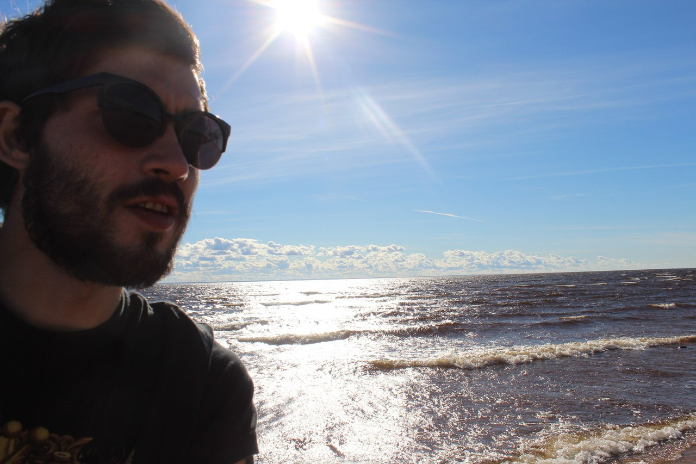

Как получить все необходимые питательные вещества без мяса и рыбы?
автор публикации
Вадим Шевелинский


Вегетарианцы — это люди, которые сознательно ограничивают свой рацион из соображений здоровья или морали. При переходе на растительную диету важно понимать: отказываясь от продуктов животного происхождения, вы рискуете лишить себя некоторых полезных веществ. Это касается белка, омега-3 жирных кислот, кальция, витамина D, витамина В12, железа, цинка и йода
Тем не менее, и вегетарианский рацион может быть полноценным, поскольку получать недостающие нутриенты можно из альтернативных источников (здесь подробно описано, каких). Но это потребует дополнительных усилий. Например, чтобы получить те белки, которые обычный человек съедать с куском мяса, вегетарианцу нужно сочетать несколько продуктов: так аминокислоты, которых не хватает в одних продуктах, будут поступать из других.
Главный недостаток диет с отсутствием в рационе мяса и рыбы заключается в том, что для получения некоторых питательных веществ приходится прикладывать специальные усилия. Это касается, например, белка, омега-3 жирных кислот, кальция, витамина D, витамина В12, железа, цинка и йода. Рассмотрим их по порядку.
Белок
Оволактовегетарианцы получают значительную долю белка из молочных продуктов и яиц. Сложнее в этом отношении веганам: белок в растительной пище — бобовых, злаках, орехах, семечках — обычно содержит не все необходимые аминокислоты и не очень хорошо усваивается. Спасает в этой ситуации в основном соя (в ней аминокислот больше всего) и сочетание максимального количества разных источников белка в течение дня: так аминокислоты, которых не хватает в одних продуктах, будут поступать из других. В целом при правильном планировании достаточное количество белка могут получить все вегетарианцы.
Омега-3 жирные кислоты
С омега-3 жирными кислотами дела обстоят сложнее: наиболее полезные из них — эйкозапентаеновая кислота (EPA) и докозагексаеновая кислота (DHA) — содержатся в рыбе и морепродуктах, и здесь выигрывают пескетарианцы. В незначительном количестве оволактовегетарианцы могут получить эти кислоты из яиц. Для веганов остаются только источники менее полезной α-линоленовой кислоты (ALA) — семена льна, зародыши пшеницы, грецкий орех, каноловое масло, соя и некоторые другие. ALA преобразуется в организме в EPA и DHA, но это медленный процесс, эффективность которого зависит от генетических особенностей, возраста, состояния здоровья и других факторов. Если человек не получает с едой достаточного количества EPA и DHA, рекомендуется удвоить обычное потребление ALA. А беременным и кормящим женщинам, пожилым людям и людям с хроническими заболеваниями (например, диабетом) лучше принимать добавки с EPA и DHA, добытыми из микроводорослей.

Кальций
С кальцием практические нет проблем у оволактовегетарианцев: в большом количестве они могут получать его из молока и молочных продуктов. Веганы же сталкиваются с тем, что кальция в растительной пище (капусте, репе, брокколи, орехах, сухофруктах), во-первых, мало, а во-вторых, он опять-таки хуже усваивается. Решением могут служить обогащенные кальцием соевые молоко, йогурт и сыр, злаковые батончики, мюсли и соки. Следить за поступлением кальция в организм веганам следует очень внимательно: этот элемент принципиально важен для здоровья костей. Исследование, проведенное в Великобритании с участием нескольких десятков тысяч человек, показало, что риск перелома костей у оволактовегетарианцев и тех, кто ест мясо, примерно одинаковый, в то время как у веганов он выше. Особенно важно обеспечивать адекватное поступление кальция в организм детям, беременным/кормящим женщинам и пожилым людям. Если не удается получить его в достаточном количестве с едой, стоит принимать специальные таблетки. Желательно — с витамином D, который способствует тому, чтобы кальций усваивался.
Витамин D
Витамин D необходим для здоровья костей и имеет ряд других важных функций. Он поступает с едой и синтезируется при нахождении на солнце. В еде он присутствует в рыбе с высоким содержанием жира (лосось, тунец, скумбрия), понемногу — в говяжьей печени, сыре и яичном желтке. Существуют обогащенные витамином D молоко, соевое молоко и хлопья. Если человек, особенно ребенок, беременная/кормящая женщина или пожилой человек мало находится на солнце и не получает необходимого количества витамина D (см. таблицу 2) с пищей, имеет смысл принимать его в добавках.
Витамин В12
Самая большая проблема для веганов — это витамин В12. Дело в том, что он содержится только в продуктах животного происхождения (мясе, рыбе, яйцах, молоке и его производных). И если оволактовегетарианцы и тем более пескетарианцы при желании могут получить необходимое количество из еды, то веганам обязательно надо принимать витамин в таблетках или в большом количестве употреблять искусственно обогащенные им продукты (например, такими бывают те же мюсли).
Железо
К сожалению, железо из растительной пищи тоже усваивается хуже, чем железо из мяса. Некоторые вещества — танины (содержатся в чае и кофе), фитаты (содержатся в бобовых, орехах, сое, семечках) — затрудняют всасывание железа, в то время как витамин С, например, улучшает его. Вегетарианцы могут получать железо из злаков (в том числе, например, специально обогащенных железом утренних хлопьев или хлеба), бобовых, сои, листовой зелени, сухофруктов, ростков пшеницы. Если регулярно употреблять все это вместе с чем-то, что содержит аскорбиновую кислоту (витамин C), можно добиться адекватного поступления железа в организм.
Цинк

Цинк содержится в устрицах, мясе, молоке и молочных продуктах, цельных злаках, бобовых, ростках пшеницы, орехах. Как и в случае с железом, его биодоступность в растительных продуктах ниже, чем в продуктах животного происхождения, — в частности, опять же, из-за соседства с фитатами. Вегетарианцы достоверно получают меньше цинка, чем невегетарианцы, но у взрослых это обычно не оказывает существенного влияния на здоровье — вероятно, благодаря компенсаторным механизмам. Озабоченность вызывает возможный недостаток цинка у детей, беременных/кормящих женщин и пожилых людей. Хотя данных недостаточно, чтобы говорить о критическом недостатке цинка у этих категорий вегетарианцев, теоретически им могут угрожать задержка роста и повышенный риск развития инфекций. Поэтому им стоит внимательно следить за поступлением цинка в организм.
Йод
И оволактовегетарианцам, и веганам может не хватать йода. Он содержится в морских водорослях, морепродуктах, молоке и молочных продуктах, яйцах, зерновых, хурме. Спасти от дефицита йода могут йодированная соль и специальные добавки (они особенно рекомендованы женщинам-веганам детородного возраста).